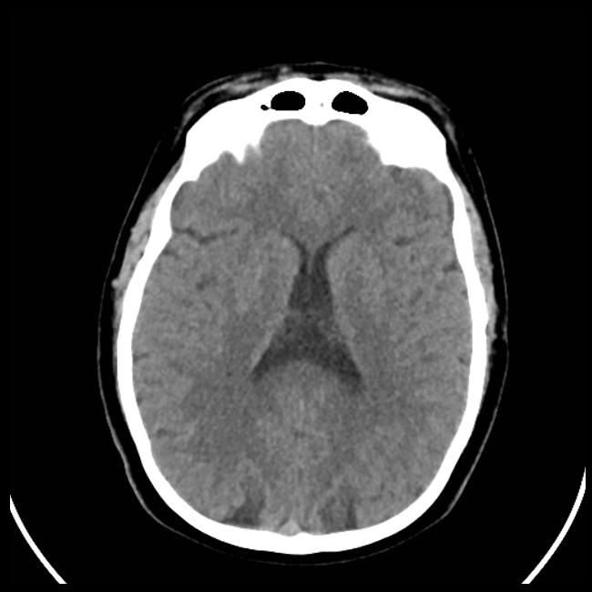

{% extends "base.html" %} {% block title %}Form Page{% endblock %} {% block content %}

<style>
  ::file-selector-button {
    display: none;
  }

  .text-justify {
    text-align: justify !important;
  }

  .dropzone {
    background: white;
    border-radius: 5px;
    border: 2px dashed rgb(0, 135, 247);
    border-image: none;
    max-width: 500px;
    margin-left: auto;
    margin-right: auto;
  }
</style>

<div class="form-container">
  <form class="img-form" action="" method="post" enctype="multipart/form-data" name="file">
    <br>
    <div class="row mt-5 mb-3 bg-info p-3 mx-2 rounded-3">
      <div class="col-3 d-flex align-items-center">
        
      </div>
      <h2 class="col d-flex align-items-center">DỰ ĐOÁN BỆNH ĐỘT QUỴ VỚI ẢNH CT NÃO</h2>
    </div>
    <div class="row mb-3 image-example-container">
      <p class="col-6 text-info">Hãy tải ảnh CT Scan giống như ảnh mô tả bên phải để đạt được hiệu quả tốt nhất</p>
      
    </div>

    <div class="input-group mb-3 col-6">
      <label class="input-group-text" for="inputGroupFile01">Tải lên</label>
      <input class="form-control col-6" type="file" name="file" id="inputGroupFile01" />
      <button type="submit" class="btn btn-primary predict-btn">Dự đoán</button>
    </div>

    <div class="row">
      {% if img_url %}
      
      {% endif %}

      <div class="prediction col-md-6">
        <h2 class="text-center predict-title">{% if prediction %}{{prediction}}{% endif %}</h2>
      </div>
    </div>
  </form>
</div>

<script type="module">
  import { HOST } from "../static/constant.js";
  const form = document.querySelector(".img-form");
  form.setAttribute("action", `${HOST}/image`);

  function handleForm(event) {
    event.preventDefault();
  }
  form.addEventListener("load", handleForm);

  const predictionContent = document.querySelector(".prediction");
  const predictTitle = document.querySelector("h2.predict-title");
  const predictBtn = document.querySelector(".predict-btn");
  const exampleZone = document.querySelector(".image-example-container");

  predictBtn.addEventListener("click", () => {
    exampleZone.style.display = "none";
  });

  window.onload = () => {
    if (predictTitle.innerText == "Stroke") {
      exampleZone.style.display = "none";
      predictionContent.innerHTML += `
        <h5 class="text-center">Bạn có nguy cơ bị đột quỵ❗</h5>
        <p class="text-justify">Nếu bạn hoặc ai đó bạn biết bị đột quỵ, đó có thể là khoảng thời gian rất đáng sợ và bấp bênh. Tuy nhiên, điều quan trọng cần lưu ý là nhiều người bị đột
          quỵ có thể phục hồi hoàn toàn với sự hỗ trợ và chăm sóc y tế thích hợp.
        <br><br>
        Tôi khuyến khích bạn tìm kiếm sự chăm sóc y tế khẩn cấp ngay lập tức nếu bạn hoặc ai đó mà bạn biết có các triệu chứng của đột quỵ, chẳng hạn như đột ngột yếu hoặc tê ở mặt hoặc
        tay chân, khó nói hoặc các vấn đề về thị lực. Thời gian là rất quan trọng trong một cơn đột quỵ, vì vậy điều quan trọng là phải hành động nhanh chóng.
        <br><br>
        Hãy nhớ chăm sóc bản thân và tìm kiếm các nguồn lực cũng như sự hỗ trợ mà bạn cần trong thời gian khó khăn này
        </p>`;
    } else if (predictTitle.innerText == "Normal") {
      exampleZone.style.display = "none";
      predictionContent.innerHTML += `
        <h5 class="text-center">Sức khỏe của bạn tốt ❤️</h5>
        <p class="text-justify">Bạn đang làm một công việc tuyệt vời trong việc chăm sóc sức khỏe của mình và đưa ra những lựa chọn thông minh! Tránh đột quỵ đòi hỏi rất nhiều nỗ lực và 
        cống hiến, và sự chăm chỉ của bạn đã được đền đáp. Tiếp tục công việc tuyệt vời và tiếp tục ưu tiên sức khỏe và hạnh phúc của bạn. Bạn nên tự hào về bản thân vì đã thực hiện các
        bước cần thiết để giảm nguy cơ đột quỵ. Hãy nhớ luôn lắng nghe cơ thể của bạn và tìm kiếm sự chăm sóc y tế nếu cần. Tiếp tục tỏa sáng!
        </p>`;
    }

    // const storedTheme = localStorage.getItem("theme");
    // const gptLayoutBg = document.querySelector(".app.gpt-layout");
    // const contentsBg = document.querySelector(".contents");
    // const formContainerBg = document.querySelector(".form-container");
    // const gptHideButtonBg = document.querySelector(".gpt-hide-button i");

    // if (storedTheme == "light") {
    //   html.setAttribute("data-bs-theme", storedTheme);
    //   localStorage.setItem("theme", "light");
    //   gptLayoutBg.classList.add("light-mode");
    //   contentsBg.classList.add("light-mode");
    //   formContainerBg.classList.add("light-mode");
    //   gptHideButtonBg.style.color = "#000";
    // } else {
    //   html.setAttribute("data-bs-theme", "dark");
    //   localStorage.setItem("theme", "dark");
    //   gptLayoutBg.classList.remove("light-mode");
    //   contentsBg.classList.remove("light-mode");
    //   formContainerBg.classList.remove("light-mode");
    //   gptHideButtonBg.style.color = "#fff";
    // }
  };
</script>

{% endblock %}
